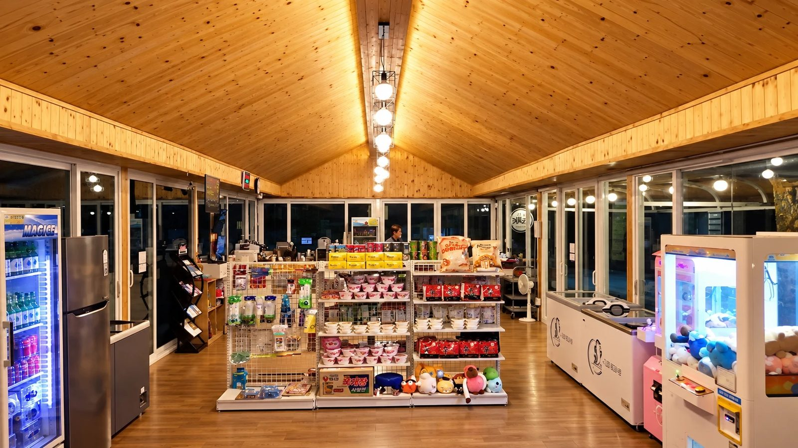

미소가든펜션캠핑장 안에는 뭐가 있나요? 수영장·노래방·편의점·산책로·운동장 이용 시간
미소가든펜션캠핑장 단지 안에는 수영장, 노래방, 편의점, 가로수길 산책로, 족구장·풋살장, 세미나실, 바베큐 시설이 있습니다. 장을 보거나 놀거리를 찾아 밖으로 나가지 않아도 단지 안에서 하루를 보낼 수 있습니다. 시설별 운영 시간과 요금을 정리했습니다.

시설별 한눈에 보기
| 시설 | 이용 안내 |
|---|---|
| 수영장 | 여름철 10:00~19:00 · 성인풀 수심 1.2m, 유아풀 수심 0.7m · 튜브 보증금 5,000원 |
| 노래방 | 7호 2층 · 밤 10시까지 · 큰방 시간당 50,000원, 작은방 시간당 30,000원, 코인노래방 1곡 500원 |
| 편의점 | 09:00~22:00 · 고기·숯·아이스크림·생필품 |
| 바베큐 | 밤 10시까지 · 숯+그릴 40,000원(5명 이상 50,000원), 현장 결제 |
| 세미나실 | 10:00~17:00 대관 · 최대 40명 · 400,000원 (세미나실 안내 글) |
| 가로수길 산책로 | 캠핑장 잔디존 옆 · 투숙객 자유 산책 |
| 족구장·풋살장 | 네트·골대·공 구비 · 투숙객 이용 |
수영장
성인풀(5 × 10m, 수심 1.2m)과 유아풀(5 × 4m, 수심 0.7m)이 따로 있습니다. 6월 중순부터 9월 중순까지 오전 10시~오후 7시에 운영하며, 운영 기간은 해마다 조금씩 달라질 수 있어 예약할 때 확인하는 것이 좋습니다. 튜브는 보증금 5,000원에 빌릴 수 있고 반납하면 보증금을 돌려드립니다. 수영복 또는 민소매 티셔츠·반바지를 입어야 합니다.
노래방
7호 건물 2층에 있습니다. 큰방 1개(시간당 50,000원)와 작은방 2개(시간당 30,000원), 1곡 500원짜리 코인노래방 2대가 있고 밤 10시까지 이용할 수 있습니다.
바베큐
숯과 그릴을 40,000원(5명 이상은 50,000원)에 준비해 드리며 현장에서 결제합니다. 5·6호는 7호 야외 바베큐장, 11·12호는 공동 바베큐장을 쓰고, 나머지 객실은 객실 앞에서 바베큐를 할 수 있습니다. 바베큐는 밤 10시까지입니다.
가로수길 산책로
캠핑장 잔디존 옆으로 나무가 양쪽에서 가지를 맞대 터널처럼 이어지는 가로수길이 있습니다. 단지 밖으로 나가지 않고 조용히 산책할 수 있고, 10월 중순~말에는 단풍이 듭니다.
족구장·풋살장
족구장과 풋살장이 따로 있고 네트·골대·공이 갖춰져 있어 단체 체육 행사에 쓰기 좋습니다.
자주 묻는 질문
수영장은 언제 운영하나요?
6월 중순부터 9월 중순까지 오전 10시~오후 7시에 운영합니다. 해마다 기간이 조금 달라질 수 있습니다.
튜브를 빌릴 수 있나요?
네, 보증금 5,000원을 내면 빌릴 수 있고 반납하면 보증금을 그대로 돌려드립니다.
노래방은 몇 시까지 이용할 수 있나요?
밤 10시까지 이용할 수 있습니다.
바베큐 숯과 그릴은 얼마인가요?
40,000원이고, 5명 이상이면 50,000원입니다. 현장에서 결제합니다.
편의점은 몇 시에 여나요?
오전 9시부터 밤 10시까지 운영합니다.
미소가든펜션캠핑장 이용 정보
- 주소: 충북 제천시 봉양읍 제원로6길 39
- 전화: 043-653-2885 / 010-4624-2885
- 입실 15:00 · 퇴실 11:00 (밤 10시 이후 도착 시 사전 연락)
- 실시간 예약: 예약 페이지 바로가기